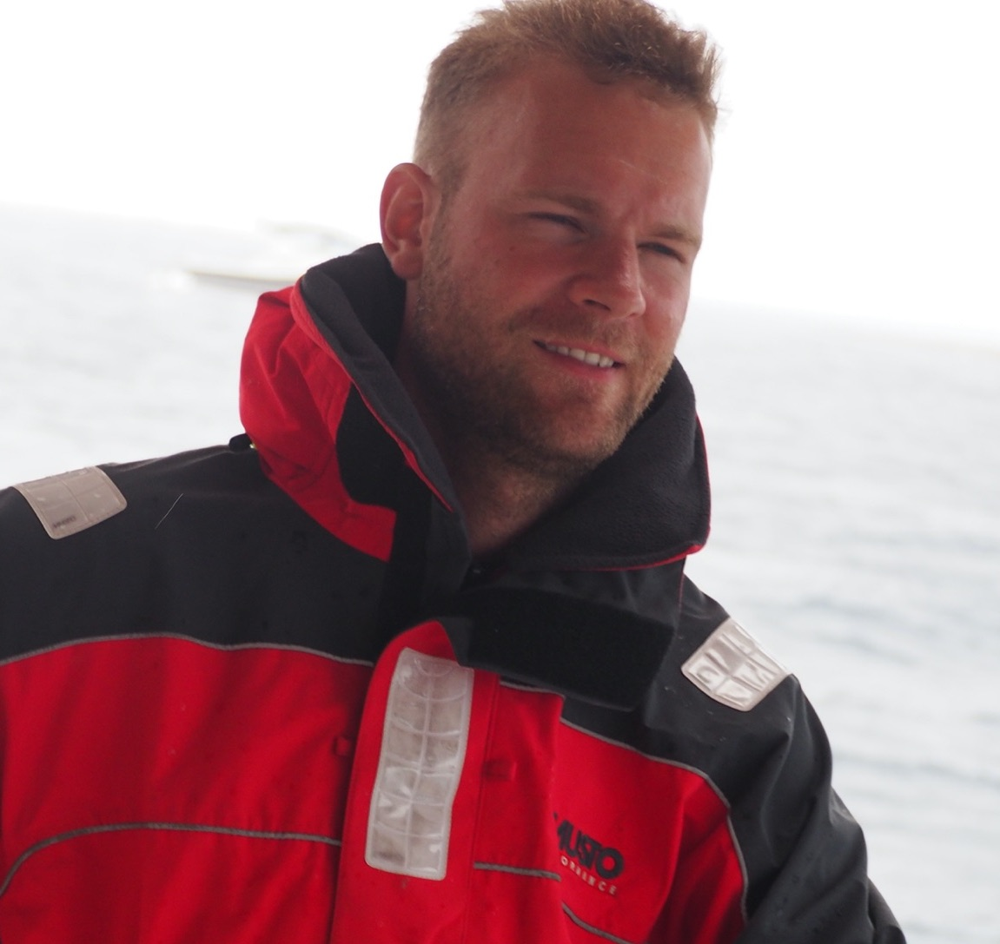
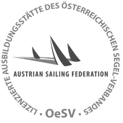
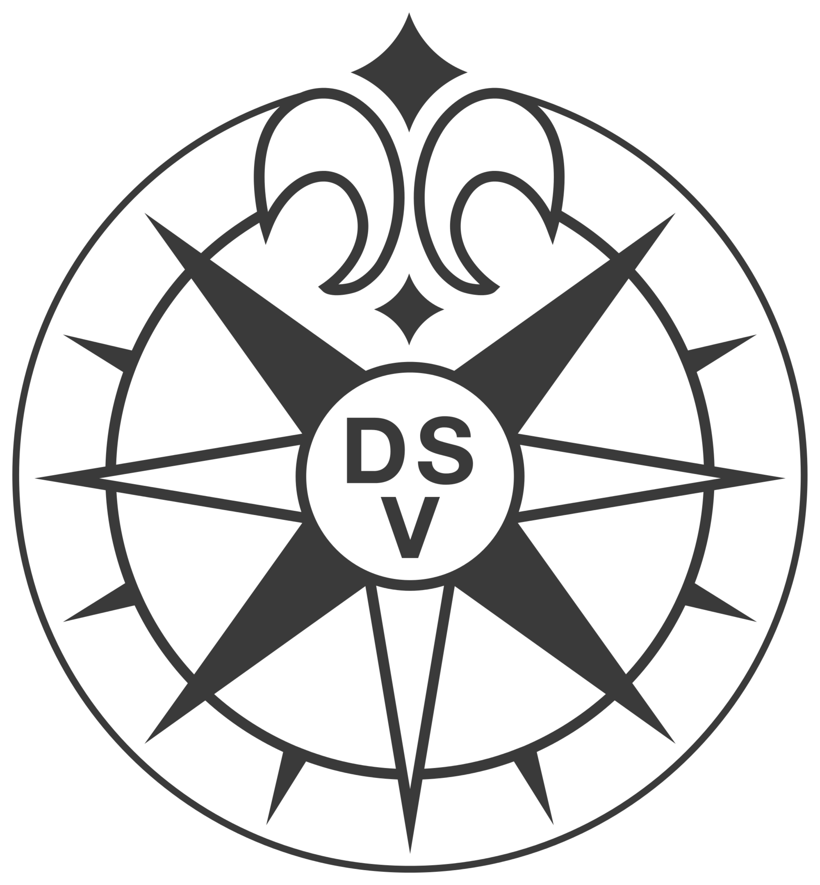
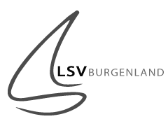
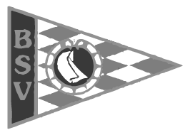
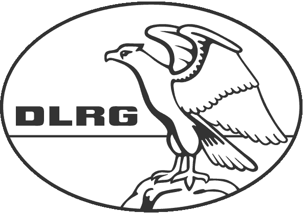

Personal Details:| Name: | Sebastian Knigge |
| Date of birth: | 1992-09-29 |
| Club: | MRSV "Bayern" von 1910 e.V. |
| Saison 2019 | Duke University Sailing Team (North Carolina) |
| Since 2017 | Trainer for Landessegelverband Burgenland LSV Burgenland (Neusiedlersee and international) |
| 2015 - 2016 | Sailing instructor at Segelschule Kreindl (Neusiedlersee) |
| Saison 2012 | Youth leader MRSV
Member of the extended board |
| 2011 - 2012 | Trainer MRSV
Weekly trainings and regatta coaching |
| 2011 - 2012 | Trainer for Optimists MYC
Weekly trainings |
| 2007 - 2010 | 420er
Participation in 30 regattas - Germany and international. |
| 2003 - 2007 | Optimist
Participation in 56 regattas - Germany and international. |
| 2018 | National instructor certification sailing - Bundessportakademie/ÖSV |  |
| 2018 | License Offshore (SKS) - DSV |  |
| 2017 | Instructor certification (Burgenland) - LSV-Burgenland |  |
| 2008 | Trainer license (Bavaria) - BSV |  |
| 2010 | License Inshore (engine & sail) - DSV | |
| 2008 | Licesne inland waters (engine & sail) - DSV | |
| 2004 | Lifeguard - DLRG |  |